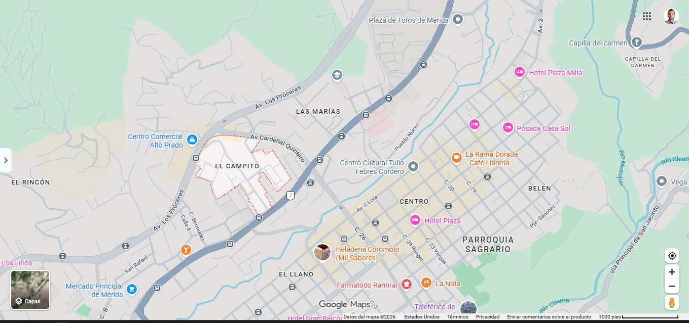

El SECTOR es la parte más pequeña: tu barrio, urbanización o cuadra.
Orden: sector → parroquia → municipio → estado → país.
Vivimos en un sector de la Parroquia Spinetti Dini, en el Municipio Libertador (ciudad de Mérida), Estado Mérida, Venezuela.
En el mapa: identifica tu sector, marca un hito, marca TU CASA y nombra sectores o calles vecinas.
1. ¿Qué nivel es el más pequeño?
2. Tu casa está en un…
3. ¿En qué parroquia está tu sector?
4. Athletic Iron Gym es un…
5. Colegio Madre Emilia es un hito…
6. Los vecinos de tu sector son…
7. En el mapa, marca tu casa. Módulo: ______
8. ¿El Teleférico está en Spinetti Dini?
9. Iglesia Carmelitas sirve de…
10. ¿Debes marcar tu casa en el mapa?
11. El sector es más pequeño que la…
12. Nombre de tu sector: ______
